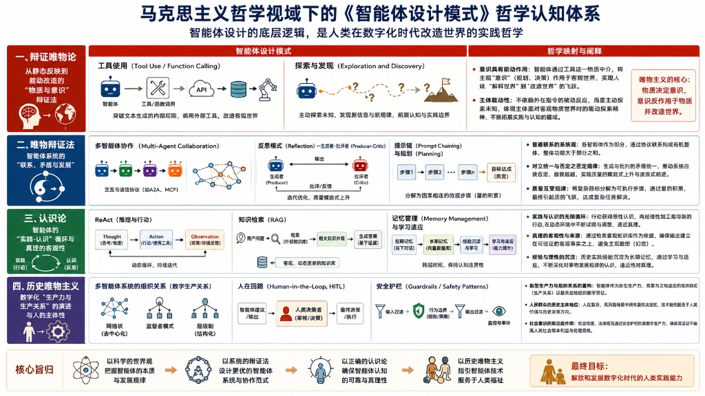

PaaS Agent Assistant
基于 AgentScope Java 构建的多智能体系统
LLM、Memory、MCP/Skills、A2A
PaaS Agent Assistant愿景
❖ PaaS 多智能体协同蓝图
- Agent Gateway (统一入口网关): 作为外部流量统一 API 接入与 SSE 流量网关，处理智能意图路由。
- 配置向导智能体 (Guide Sub Agent): 专注应用上云引导与配置咨询，通过 RAG 问答、Kubectl 指令指引及 YAML 规范释义消除研发上云配置鸿沟。
- 应用诊断智能体 (Diagnosis Sub Agent): 专注应用健康诊断与故障排除，对接
k8s-mcp-server自动分析 Pod/Event 异常状态并拉取指标日志定位根因。 - 变更执行智能体 (Change Sub Agent): 专注受控变更与应用自愈，编排高危变更计划，挂载平台
paas-mcp-server进行受控执行，保障故障在安全红线内自动闭环修复。
PaaS Agent Assistant 整体功能架构蓝图
核心能力
PaaS Agent Assistant 技术拓扑全景图
AgentScope 1.x 五大核心模块总览
Message 模块
将智能体间的数据交互和多模态介质彻底抽象为统一的 Msg 对象。通过自定义多模态 Content 块结构，原生传递文本、图片、思考轨迹及工具使用流。
Model 模块
抹平厂商 API 格式与参数结构差异，实现统一响应结构（ChatResponse）。内置 Formatter 支持角色 prompt 翻译及 Usage 单次费用追踪与钩子统计。
Memory 模块
提供短期缓存 InMemoryMemory 和长期检索事实库 LongTermMemory 接口规范，通过双轨操作管理和第三方事实沉淀库（如 Mem0）提供上下文容错与支持。
Tool 模块
负责提取方法的 JSON Schema。集成远程 MCP Stateful/Stateless 客户端，引入 Tool Group 分组管理机制，支持程序动态控制可用工具集范围。
Hook 模块
以统一事件模型在 Agent 生命周期各阶段（推理前/后、工具调用前/后）注入自定义逻辑，实现 Prompt 增强、工具监控、审计追踪等横切关注点。
核心模块 1 - Message 与 ContentBlock 多模态推理轨迹
✉ Message & ContentBlock 架构设计
在多 Agent 的 A2A 交互及流式输出场景中，大模型生成的输出不仅仅包含简单的“回复文本”，还承载着内部的思考链路（Thinking）以及工具调用（ToolUse）。
- Msg 实体定义: 统一的包装类，包含
name（发送方智能体名称）、role（user/assistant/system 身份）、metadata（辅助元数据）和content。 - ContentBlock 抽象设计:
content字段设计为List<ContentBlock>序列。 - Block 子类派生: 包含代表大模型原生思维的
ThinkingBlock，发起调用的ToolUseBlock，回填工具执行结果的ToolResultBlock，以及正常的TextBlock和ErrorBlock。 - 多模态统一表示: 多模态介质及工具状态变化被解耦隔离在独立的 Block 容器中，避免了字符串混杂污染与解析困难。
核心模块 2 - Model 适配 Formatter 转换及调用流
⚙ Model 异构屏蔽与 Formatter 数据翻译
大模型提供商 API 标准千差万别。AgentScope 引入 Model 核心层对模型底层协议、格式器进行深度屏蔽与统一度量。
- ChatModelBase 抽象类: 规定流式异步接口（返回非阻塞
async generator），实现单次交互中同时返回文字与思维链的统一ChatResponse实体。 - Formatter 双格式化器:
• ChatFormatter: 针对单智能体对话格式化。
• MultiAgentFormatter: 针对多 Agent 协作对话历史格式化，自动翻译非原生支持多角色模型的上下文提示词（插入 Name 识别符）。 - Usage Tracking (用量追踪): 统一在
ChatResponse返回元数据中附加 Token 详情与延迟耗时，以便系统全局进行精细化计费与监控告警。
核心模块 3 - Memory 架构与 Mem0 异步高可靠线程池调度
☷ Memory 架构设计与并发异步线程池
内存会话管理和跨会话长期记忆是运维助手必须攻克的两大难关。本系统引入长短记忆双轨架构及隔离线程池技术：
- 短期缓存 (Short-Term Memory):
InMemoryMemory缓存当前轮次会话。由于推理触发与状态通知为多线程并发访问，内部消息存取强制采用线程安全的CopyOnWriteArrayList隔离并发写冲突。 - 长期记忆 (Long-Term Memory):
LongTermMemoryBase提供事实沉淀能力，对接第三方个性化长期记忆引擎（Mem0 Cloud / Self-hosted）。 - 异步 BoundedElastic 线程池: 长期记忆提取（LLM 总结与事实存储）响应迟缓。系统在 Hook 触发
PostCallEvent时，将 LTM 的record任务异步提交至 BoundedElastic 线程池（1 工作线程，3 等待队列），若高并发积压则主动丢弃任务，绝不拖慢 Reason 主链路。 - 容错屏障 (Fault-Tolerance): 所有 LTM 调用均使用
.onErrorResume()防御机制，网络抖动或服务故障时降级为日志警告，保障核心对话永不中断。
自动记忆管理 (AutoMemoryContext) 压缩及卸载原理
✦ 上下文自动压缩与清理流
在多轮次的 Kubernetes 诊断排查中，每次工具调用都会返回冗长复杂的 K8s 资源 JSON/YAML 信息，内存消息队列很容易超出 LLM 上下文窗口限制导致溢出崩溃。
- 自适应触发 (msgThreshold): 设定消息条数/Token 临界阈值。一旦未压缩的原始消息数量突破此界限，自动在 PreReasoning 阶段拦截并执行压缩流程。
- 强制保留保护 (lastKeep): 压缩并非全盘丢失。系统将强制抓取并保护最近的
lastKeep轮原始会话不作处理，确保大模型拥有精准的最近指令语境。 - 模型摘要 offload: 调用背景 LLM 对阈值前所有的历史长消息流进行语义归纳总结，凝练为高信息密度的简短 Summary 节点，将原始庞大历史移入冷存储。
- ContextOffloadTool 兜底: 自动将冷存储检索工具载入智能体工具箱，使得 Agent 在后续推理中如果急需查询历史资源快照，能够通过工具显式检索找回。
核心模块 4 - Tool 架构、有状态/无状态 MCP 及 Tool Group 动态供给
🛠 Tool 架构与 MCP 客户端精细化管理
在 PaaS 场景下，工具不仅执行轻量的 API 查询，还需要维护长生命周期的终端交互状态（如 Pod 文件浏览）。
- Stateful (有状态 MCP 客户端): 维持持久的长连接会话（Websocket/SSE），适用于跨多次工具调用需要保持 cookie、登录态或 shell 目录路径的场景。
- Stateless (无状态 MCP 客户端): 事务型短连接设计。工具调用前瞬间连接，获得数据后即刻释放，适用于轻量级日志拉取、事件获取等，大幅节约系统连接数句柄开销。
- Tool Group 分组解决“选择悖论”: 运维助手注册了近百个只读与变更工具，过多工具描述会造成 LLM 上下文臃肿并显著降低选参准确度。
- 动态工具激活 (`reset_equipped_tools`): 系统对工具进行逻辑分组（如
browser-tools、k8s-modify-tools）。智能体根据当前所处的认知阶段，调用 reset 方法自主动态切换可用工具掩码，压缩 LLM 搜索空间。
统一拦截设计：Hook 机制与全生命周期事件管理
⚓ AgentScope Java 统一事件拦截模型
在生产级多智能体系统中，Hook 提供了一个非侵入式的扩展机制，能够在 Agent 运行的各个核心阶段对输入输出和上下文进行拦截、监控与动态修改。
- 统一事件抽象 (HookEvent)：所有拦截阶段均被建模为强类型的
HookEvent，通过统一的onEvent(T event)接口以反应式（Reactive Mono）流式处理。 - 双向修改能力 (Modifiable)：前置事件（如
PreReasoningEvent、PreActingEvent）允许 Hook 修改输入消息或工具参数，是动态 Prompt 注入与参数过滤的基石。 - 优先级链式执行 (Priority)：支持
priority()属性，值越小执行顺序越靠前（默认 100）。可配置多个 Hook 串联执行（如安全审计 -> 监控）。 - 内置 Trace 导出 (JsonlTraceExporter)：官方提供开箱即用的 JSONL 追踪 Hook，自动记录全链路的 Reasoning Chunks、Tool 调用及异常堆栈，实现离线 Debug 与可观测性。
大模型适配：异构 LLM 特殊 Token 双端清洗机制
核心痛点 (Problem)：
切换不同大模型（GPT-4o, DeepSeek, Qwen）时，前端界面经常闪烁乱码，甚至 Markdown 渲染排版彻底崩解。
原因分析 (Cause)：
异构模型输出格式不一，在流式报文中裹挟了大量原生私有控制 Token（如 Qwen 的 <tool_call>，DeepSeek 的 <｜tool▁sep｜>、<|EOT|> 等）。
解决方案 (Solution)：
双端双重过滤：
1. 后端（第一道防线）：利用正则在流式派发及历史记忆存储前过滤清除 Token。
2. 前端（第二道防线）：在流式打字效果渲染前利用 JS 正则进行最后净化。
架构启示 (Lesson)：
异构模型切换不能单看参数兼容，必须有一套多模型控制字符过滤机制，保证应用层呈现的绝对纯净。
| 控制通道类型 | 泄漏 Token 样本 | 后端 & 前端清洗正则模式 | 净化效果 |
|---|---|---|---|
| DSML 交互控制 | <|DSML|tool_calls> | /< *[|｜] *DSML *[|｜] *[^>|｜]+ *[|｜]? *>?/gi | ✓ 剥离控制流 |
| DeepSeek-V4 XML | <dsml:call> / </dsml> | /<\/?dsml:[^>]*>?/gi | ✓ 移除 XML |
| 模型特殊控制符 | <|im_start|> / <|EOT|> | /< *[|｜]? *(?:im_(?:start|end)|endoftext|EOT|user).*?>/gi | ✓ 净化控制符 |
| DeepSeek 全角控制 | <｜tool▁sep｜> | /<｜[^>]+｜>/g | ✓ 彻底清洗 |
ToolNarrator.cleanLlmTokens() 进行第一道清洗，降低网络传输负荷；在前端 thoughtsTimeline.ts 流式渲染前进行第二道清洗，确保最终输入渲染引擎的文字绝对纯净。
大模型适配：DeepSeek 思考模式控制与上下文压缩优化
核心痛点 (Problem)：
开启 DeepSeek 思考模式后，API 接口频繁因为参数不支持报错；同时长会话触发历史记录压缩时，生成极度缓慢且十分昂贵。
原因分析 (Cause)：
非 DeepSeek 模型无法识别 thinking_budget 等推理控制参数，导致 HTTP 400 报错。同时，DeepSeek 在生成历史上下文摘要等系统级后台任务时也会输出大量的“思维链（thinking）”，产生严重的响应延迟与无谓的 Token 消耗。
解决方案 (Solution)：
- 参数自适应装配：在实例化大模型时，只针对 DeepSeek 动态注入思考控制参数，非 DeepSeek 模型自动在底座级别从参数包中剥离。
- 禁用压缩期思考：为上下文压缩任务配置专用的
compressionModel，在触发历史记录压缩总结时，显式将thinkingBudget设为 0，防止其输出思维链。
架构启示 (Lesson)：
针对 Reasoning 推理大模型，需要区分“用户交互（需要思考）”和“系统后台任务（无需思考）”。在后台任务中应当关闭 Reasoning 以换取更低的延迟与 Token 成本。
⚙ 自适应参数与后台任务隔离
通过模型提供商感知，实现 API 参数路由与后台系统摘要任务的最优配置：
75%，同时每一次上下文压缩的 Token 消耗成本降低了将近 60%，彻底打通了生产线长轮会话的稳定性限制。
智能体协同：三防策略击退大模型“无参/并行调用”幻觉
核心痛点 (Problem)：
大模型在长链路排查中，容易陷入重复调用某工具或缺少参数的“无参调用幻觉”，甚至在同一 turn 中并发出多个完全一致的工具请求，扰乱执行时序。
原因分析 (Cause)：
大模型自我纠错逻辑（Self-Correction）缺陷，以及原生支持的并发工具调用在 SRE 诊断场景下的不适应性。
解决方案 (Solution)：
三防策略联合防御：
- 模型限制：通过参数强制设置
parallel_tool_calls: false，从协议级禁止并行调用。 - 提示词规范：在系统提示词中增加“每次仅能调用一个最适合工具”的硬性规则。
- 去重签名缓存：在客户端封装层实现基于哈希签名的请求缓存，对完全一致的工具调用直接复用缓存，不再发起网络请求。
架构启示 (Lesson)：
生产环境的 Agent 系统不能完全信赖大模型的自我约束，必须在底层执行客户端建立请求幂等和防抖设计。
🛡️ 工具调用三防屏障机制
客户端封装层与 LLM 请求配置的双层防御拦截链路：
12% 降至 0%，拦截了 100% 的同 turn 重复并行请求，极大地提升了系统的时序稳定性和排查安全。
协同设计：原子 MCP Tools 与 SRE Skills 双轨协同机制
核心痛点 (Problem)：
在复杂的智能运维场景中，若让 Agent 直接在裸接口层进行盲目摸索（LLM 盲目猜参数、滥用 raw kubectl），不仅会导致决策空间指数级膨胀，还会带来极高的系统变更风险。
原因分析 (Cause)：
大模型缺乏对运维排查流程（SOP）的先验知识，且其 Tool 调用权限过大、无边界，导致检索和执行空间无规则扩散。
解决方案 (Solution)：
- 原子 MCP 工具分组：遵循 SRE 最小特权原则，在
McpToolRegistrar中分组托管，高风险指令组默认关闭以缩减故障半径。 - 专家 SRE Skills (SOP 排查树)：在
resources/skills/下以 YAML + Markdown 规范沉淀 8 大领域 SOP，限制大模型排查路径。 - 动态掩码搜索压缩：Agent 根据排查阶段，自动调用
reset_equipped_tools方法动态更新工具掩码，压缩大模型工具搜索空间。
架构启示 (Lesson)：
企业级 Agent 落地不能依赖模型的纯粹推理，必须利用 **SOP Skills (规则导航) + Mcp Tools (执行触手) 的双轨设计**来限制与保护模型。
前端交互：思考过程 (Thinking) 模块设计与流式时间线
核心痛点 (Problem)：
在长轨迹诊断任务中，Agent 会多次调用大模型推理和工具。如果前端在等待大模型响应的几十秒内处于白屏或简单 Loading，用户会产生严重的“白屏焦虑”。
原因分析 (Cause)：
传统的 SSE 流式输出仅支持单一字符追加，缺乏对大模型内部“思考推理（Reasoning）”、“工具调用（Tool Use）”和“Agent 移交（Handoff）”等复杂中间状态的结构化分发和渐进式渲染能力。
解决方案 (Solution)：
- 结构化 SSE 事件分发：将数据流细分为
reasoning_delta（推理文本）、tool_start（触发工具）、tool_result（工具输出）和error结构化事件。 - ThinkingTimelineStep 状态机：前端维护响应式时间线步骤列表，定义 reasoning、tool、handoff 和 error 四种状态角色，实现自动流式滚动。
- 动态折叠体验：推理中卡片默认展开并流式打字；一旦收到 `done` 完成事件，卡片自动平滑折叠，呈现清爽结论。
架构启示 (Lesson)：
多 Agent 协同系统的前端开发已不是简单的对话问答，必须转向基于中间状态机（State Machine）的流式渲染，才能提供顺畅的“白盒化”运维体验。
安全防线：两阶段受控变更执行机制
核心痛点 (Problem)：
在运维场景中，让大模型直接拥有自主对集群执行 DELETE 或 PATCH 变更的权限是非常高危的，模型幻觉可能引发误删核心 Deployment 等灾难。
原因分析 (Cause)：
Agent 在执行 Tool Call 时是单向闭环的，默认直接触发工具底层写通道，缺乏物理级别的安全审核、阻断以及人工二次介入审计机制。
解决方案 (Solution)：
- 阶段一：生成计划 (change-plan-*)：Agent 仅评估风险，生成变更计划草案并在 MySQL 登记
approval_id与回滚预案。 - 等待显式授权：前端捕获计划并挂起会话，弹出授权卡片，强制要求值班运维人员（User）人工核对审批。
- 阶段二：确认执行 (change-execute)：必须携带
approval_id及confirmed=true才能解锁平台 MCP 的写通道进行变更。
架构启示 (Lesson)：
生产环境的 AI 自愈必须遵循两阶段提交协议 (Two-Phase Commit)，确保“AI 建议、人类终审”的安全底线绝不动摇。
生命周期闭环：解决前端断开与后台 AI 任务线程泄漏
核心痛点 (Problem)：
用户在前端主动“取消请求”或关闭浏览器标签页时，后端大模型和外部 MCP 工具依然在后台默默执行，造成严重的 Token 浪费与后台线程堆积。
原因分析 (Cause)：
前端 SSE（Server-Sent Events）连接断开信号没有传递给底层的 Agent 引擎，任务生命周期失控。
解决方案 (Solution)：
- 生命周期绑定：通过 Classpath Shadowing 策略重写
AgentBase，在响应 Flux 流中增加sink.onDispose(disposable)绑定底层大模型任务。 - 全链路逆向取消：后端 WebFlux Controller 监听
.doOnCancel()信号，级联触发并调用disposable.dispose()终止执行；同时前端利用AbortController实现前端断开时的信号联动。
架构启示 (Lesson)：
对于长轨迹/流式大模型调用，必须建立“连接断开”到“任务中断”的闭环取消机制，否则大模型失控运行将导致高昂账单。
⚙️ WebFlux 逆向取消与 Shadowing 控制
利用 Reactor Flux 反应式流与 AbortController 进行双向断开联动：
落地复盘：我们真正学到了什么
📝 几条真实的教训
- LLM 不是一个可信赖的"执行器" 在开始之前，我们高估了模型的自我约束能力。并发工具幻觉、无参调用、DeepSeek 参数报错——这些坑都是在接入真实流量后才踩到的。最终的答案不是换模型，而是在客户端层加防御。
- 流式 = 一类全新的工程复杂度 SSE 生命周期、Token 流净化、Thinking 块过滤——这些问题在同步接口时根本不存在。流式把所有边界情况都放大了，尤其是"连接断开但任务继续跑"这个坑，排查起来很隐蔽。
- 工具设计比模型能力更关键 给模型更大的工具集不是更好。把一百个工具一次性塞给 LLM，它的准确率会显著下降。Tool Group 动态掩码 + SRE Skills SOP 约束比"让模型自己想"有效得多。
- Hook 不是可观测性的奢侈品，是必需品 在没有 Hook 拦截链路之前，调试 Agent 行为基本靠猜。现在能在 PreReasoning / PostActing 阶段拦截和打印，排查效率完全不同。
🤔 还没想清楚的问题
- ? Agent 质量怎么度量？ 目前只能通过人工观察判断诊断链路是否合理，还没有一套系统化的评估基准。
- ? Context 窗口的边界在哪里？ AutoMemoryContext 压缩的触发阈值目前靠经验调参，没有更科学的依据。
- ? 多 Agent 的一致性保障？ Diagnosis → Change 的 A2A 移交目前是软约束，模型理解的"上下文"和实际传递的数据之间还有 gap。
⏭ 如果重来，会优先做什么
- → 更早建立 Hook 链路和 JSONL Trace，而不是后期追加
- → Tool Group 从第一天就设计分组策略，而不是在工具膨胀后补救
- → SSE 生命周期绑定在框架层解决，不要让业务代码感知
Agent Design Pattern：智能体系统的设计模式全景

从本次 PaaS Agent 的工程实践出发，这些零散的技术应对，都是 Agent 设计模式的具体实例。 · 下次技术分享：《Agent Design Pattern》— 待排期